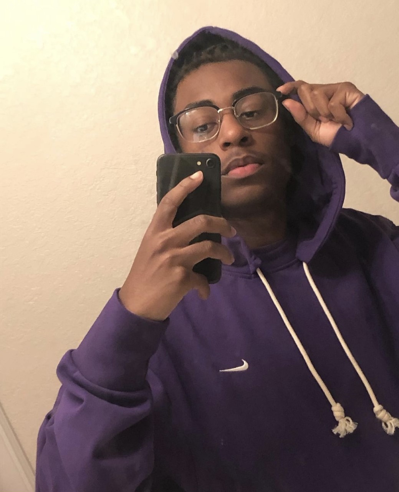
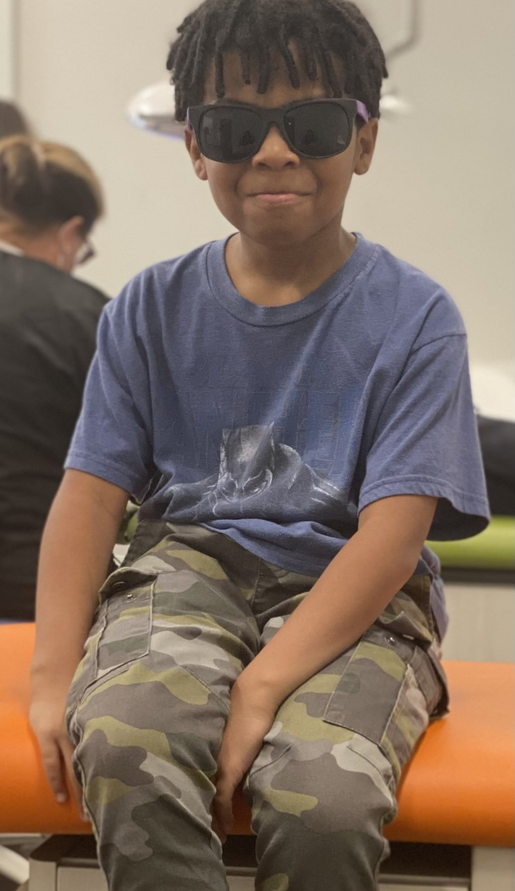
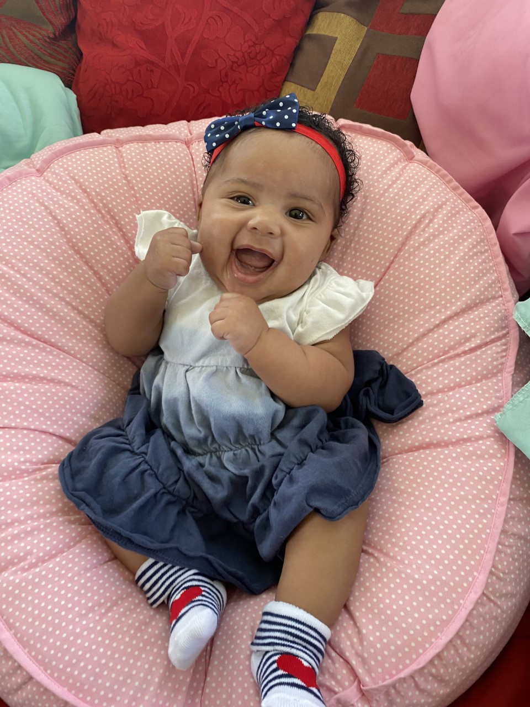

My journey started a couple years ago when I wanted to start my own company but really wanted to have a great website. I attempted to learn to code on my own. It was horrible! I started looking for some sort of program to help me learn how to code. I actually found Pivot a couple years ago and signed up for a 1 hr "essential pathway" zoom call. Unfortunely, I had to go out of town that weekend and missed the event.
In November of 2021, I started looking at Pivot again and decided after seeing a post, to sign up. I was very unsure what I want to do. I consulted with my Grandfather and he told me to do Cyber Security. I didn't think that protecting the world was for me. At the time, they didn't have anything for you to preview the programs, so I told them I was undecided. Well the day before class start I got a call that they had me enrolled in the Data Analytics program. So I decided to do it. Fast forward 7 months, I have completed the Data Analytics course but felt unfulfilled. Now here I am and loving this software development class.
My motivation starts and ends with these 4. Lex, Eli, Mal, and Nessa



Wisdom:
Strengthen my knowledge in tech.
Skill:
Learn to code & Make Websites.
Stability:
Find a fulfilling career doing something fun and intriguing.